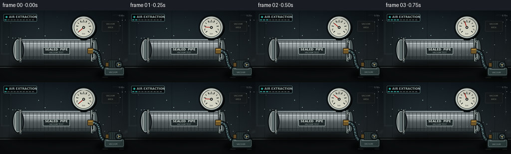
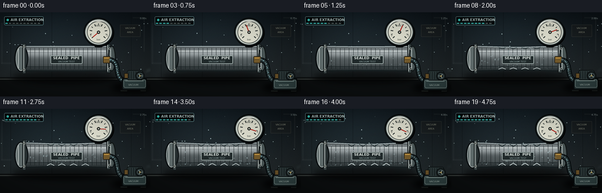

CODING AGENTS AS PIXEL WORLD MODELS
traex/GPT-5.6-Sol · mechanics_0025
点击播放 · 原生 RGB 像素
逐轮保存的候选
回放视频、检查图与代码变化。
每份候选均可单独播放。实际图片检查记录在下方工具轨迹中。
候选 01播放与检查图
点击播放 · 原生 RGB 像素


展开代码变化
--- 上一保存版本
+++ 本次保存版本
@@ -0,0 +1,290 @@
+from pathlib import Path
+import math
+import numpy as np
+from PIL import Image, ImageDraw, ImageFont, ImageFilter
+import artifact_io
+
+W,H,N,S = 256,144,20,4
+SW,SH=W*S,H*S
+ROOT=Path(__file__).resolve().parent
+rng=np.random.default_rng(25)
+
+try:
+ FONT=ImageFont.truetype('/usr/share/fonts/truetype/dejavu/DejaVuSans.ttf', 5*S)
+ FONT_B=ImageFont.truetype('/usr/share/fonts/truetype/dejavu/DejaVuSans-Bold.ttf', 6*S)
+ FONT_T=ImageFont.truetype('/usr/share/fonts/truetype/dejavu/DejaVuSans-Bold.ttf', 7*S)
+ FONT_TINY=ImageFont.truetype('/usr/share/fonts/truetype/dejavu/DejaVuSans.ttf', 4*S)
+except:
+ FONT=FONT_B=FONT_T=FONT_TINY=ImageFont.load_default()
+
+def P(v): return int(round(v*S))
+def pts(seq): return [(P(x),P(y)) for x,y in seq]
+def line(d,xy,fill,width=1,joint='curve'): d.line(pts(xy),fill=fill,width=P(width),joint=joint)
+def ellipse(d,box,fill=None,outline=None,width=1): d.ellipse(tuple(P(v) for v in box),fill=fill,outline=outline,width=P(width))
+def rect(d,box,fill=None,outline=None,width=1,r=0):
+ b=tuple(P(v) for v in box)
+ if r: d.rounded_rectangle(b,radius=P(r),fill=fill,outline=outline,width=P(width))
+ else: d.rectangle(b,fill=fill,outline=outline,width=P(width))
+def text(d,xy,s,font,fill,anchor=None,stroke_width=0,stroke_fill=None):
+ d.text((P(xy[0]),P(xy[1])),s,font=font,fill=fill,anchor=anchor,stroke_width=P(stroke_width),stroke_fill=stroke_fill)
+
+def bezier(p0,p1,p2,p3,n=50):
+ out=[]
+ for u in np.linspace(0,1,n):
+ q=(1-u)**3*np.array(p0)+3*(1-u)**2*u*np.array(p1)+3*(1-u)*u*u*np.array(p2)+u**3*np.array(p3)
+ out.append(tuple(q))
+ return out
+
+def make_bg():
+ y=np.arange(SH)[:,None]
+ x=np.arange(SW)[None,:]
+ top=np.array([13,20,25.],float); bot=np.array([42,48,49.],float)
+ t=(y/(SH-1))[:,:,None]
+ arr=np.tile(top*(1-t)+bot*t,(1,SW,1))
+ # broad cool light from upper left
+ glow=np.exp(-(((x-P(77))/P(108))**2+((y-P(30))/P(70))**2))*18
+ arr += glow[:,:,None]*np.array([.50,.72,.82])
+ noise=rng.normal(0,1.4,(SH,SW,1))
+ arr=np.clip(arr+noise,0,255).astype(np.uint8)
+ im=Image.fromarray(arr,'RGB')
+ d=ImageDraw.Draw(im,'RGBA')
+ # wall seams and faint industrial silhouettes
+ line(d,[(0,111),(256,111)],(7,10,11,180),1)
+ line(d,[(0,112),(256,112)],(73,77,74,65),1)
+ for xx in [18,88,223]: line(d,[(xx,0),(xx,111)],(6,10,13,80),1)
+ # dim rear conduits
+ line(d,[(3,18),(3,87),(19,87)],(72,81,83,45),3)
+ line(d,[(226,9),(245,9),(245,67)],(77,84,83,42),2)
+ # rear warning sign
+ rect(d,(204,21,239,42),(29,32,31,120),(99,104,95,55),1,1)
+ text(d,(221.5,27),'VACUUM',FONT_TINY,(145,148,130,105),'mm')
+ text(d,(221.5,34),'AREA',FONT_TINY,(145,148,130,85),'mm')
+ return im
+
+BG=make_bg()
+# fixed dust coordinates; intensity changes but positions remain coherent
+dust=[(float(rng.uniform(6,250)),float(rng.uniform(10,108)),float(rng.uniform(.25,.8))) for _ in range(55)]
+
+
+def draw_frame(k):
+ p=k/(N-1)
+ # eased evacuation progress, fast initial pull then settling
+ vac=1-math.exp(-3.5*p)
+ vac/=1-math.exp(-3.5)
+ im=BG.copy(); d=ImageDraw.Draw(im,'RGBA')
+ # subtle time-lapse exposure pulse
+ veil=Image.new('RGBA',(SW,SH),(0,0,0,0)); vd=ImageDraw.Draw(veil)
+ pulse=3*math.sin(k*1.27)
+ vd.rectangle((0,0,SW,SH),fill=(90,125,138,max(0,int(pulse))))
+ im=Image.alpha_composite(im.convert('RGBA'),veil); d=ImageDraw.Draw(im,'RGBA')
+ # drifting dust motes
+ for j,(xx,yy,rr) in enumerate(dust):
+ dx=(xx+1.3*k*(.25+rr)+5*math.sin(j*1.7+k*.2))%256
+ dy=yy+.7*math.sin(j*.8+k*.45)
+ ellipse(d,(dx-rr,dy-rr,dx+rr,dy+rr),(157,180,182,int(18+25*rr)))
+ # floor/table surface
+ rect(d,(0,112,256,144),(13,16,17,185))
+ line(d,[(0,114),(256,114)],(91,98,94,80),1)
+ # shadows (blurred)
+ shadow=Image.new('RGBA',(SW,SH),(0,0,0,0)); sd=ImageDraw.Draw(shadow)
+ ellipse(sd,(19,99,199,121),(0,0,0,150)); ellipse(sd,(190,120,255,137),(0,0,0,170))
+ shadow=shadow.filter(ImageFilter.GaussianBlur(P(5)))
+ im=Image.alpha_composite(im,shadow); d=ImageDraw.Draw(im,'RGBA')
+
+ # Pipe silhouette/body mask with very slight vacuum implosion at center
+ dent=max(0,(vac-.50))*5.0
+ top=[]; bot=[]
+ for xx in np.linspace(37,185,130):
+ u=(xx-37)/(185-37); influence=math.sin(math.pi*u)**2
+ top.append((xx,58+dent*influence))
+ bot.append((xx,100-dent*influence))
+ poly=top+bot[::-1]
+ mask=Image.new('L',(SW,SH),0); md=ImageDraw.Draw(mask)
+ md.polygon(pts(poly),fill=255)
+ # cylindrical brushed metal gradient
+ yy=np.arange(SH)[:,None]/S
+ xx=np.arange(SW)[None,:]/S
+ rel=np.clip((yy-58)/42,0,1)
+ profile=40+92*np.exp(-((rel-.28)/.20)**2)+33*np.exp(-((rel-.70)/.24)**2)-45*rel
+ grain=5*np.sin(xx*2.1)+2*np.sin(xx*8.3)+rng.normal(0,1.2,(SH,SW))
+ metal=np.zeros((SH,SW,4),dtype=np.uint8)
+ metal[:,:,0]=np.clip(profile+grain+36,0,255)
+ metal[:,:,1]=np.clip(profile+grain+44,0,255)
+ metal[:,:,2]=np.clip(profile+grain+46,0,255)
+ metal[:,:,3]=np.array(mask)
+ body=Image.fromarray(metal,'RGBA')
+ im=Image.alpha_composite(im,body); d=ImageDraw.Draw(im,'RGBA')
+ # body boundary and longitudinal specular streaks
+ line(d,top,(198,213,215,180),1)
+ line(d,bot,(22,30,32,220),2)
+ line(d,[(42,66+dent*.2),(180,66+dent*.2)],(239,246,244,74),1)
+ line(d,[(42,93-dent*.45),(180,93-dent*.45)],(30,39,41,100),1)
+ # fine brushed seams
+ for j in range(18):
+ xx0=44+j*7.5
+ a=22+18*((j*37)%11)/10
+ line(d,[(xx0,61+dent*.25),(xx0,97-dent*.3)],(15,23,24,int(a)),.5)
+
+ # left sealed cap and flange
+ ellipse(d,(24,56,48,102),(49,59,61,255),(15,20,22,255),2)
+ ellipse(d,(27,58,44,100),(105,118,118,255),(204,214,211,130),1)
+ line(d,[(31,62),(31,96)],(226,233,230,105),1)
+ rect(d,(38,53,44,105),(66,76,77,255),(18,25,26,255),1,1)
+ line(d,[(40,56),(40,101)],(213,221,218,120),1)
+ for by in [59,98]:
+ ellipse(d,(39,by-2,43,by+2),(24,29,29,255),(187,193,186,180),.7)
+ ellipse(d,(40,by-1,42,by+1),(105,113,109,255))
+ # right flange/cap
+ rect(d,(181,54,188,104),(54,65,66,255),(15,20,21,255),1,1)
+ line(d,[(183,56),(183,101)],(218,224,220,110),1)
+ ellipse(d,(183,57,197,101),(76,88,88,255),(18,24,25,255),2)
+ line(d,[(188,61),(188,97)],(212,222,219,95),1)
+ for yyb in [62,96]: ellipse(d,(184.5,yyb-1.8,188.5,yyb+2.2),(27,34,34,255),(170,179,174,170),1)
+
+ # top valve stem and brass valve beneath gauge
+ rect(d,(161,47,174,60),(37,45,45,255),(13,18,19,255),1,2)
+ rect(d,(165,42,170,55),(154,117,52,255),(45,37,22,255),1,1)
+ rect(d,(157,43,178,47),(122,88,38,255),(34,28,19,255),1,2)
+ ellipse(d,(158,41,177,48),(111,81,36,255),(222,178,81,165),1)
+ line(d,[(160,44),(175,44)],(241,194,91,105),1)
+
+ # Gauge shadow, casing and dial
+ ellipse(d,(143,11,194,59),(0,0,0,115))
+ ellipse(d,(142,9,193,58),(37,43,43,255),(9,13,14,255),2)
+ ellipse(d,(145,12,190,55),(205,210,199,255),(181,193,189,255),1)
+ ellipse(d,(148,15,187,53),(225,225,209,255),(61,68,66,255),1)
+ cx,cy,r=167.5,34,16.0
+ # dial ticks across 260-degree scale: bottom-left -> around top -> bottom-right
+ for j in range(11):
+ ang=math.radians(140+26*j)
+ r1=12.3 if j%2 else 11.1; r2=15
+ x1=cx+math.cos(ang)*r1; y1=cy+math.sin(ang)*r1
+ x2=cx+math.cos(ang)*r2; y2=cy+math.sin(ang)*r2
+ line(d,[(x1,y1),(x2,y2)],(35,43,42,255),1 if j%2 else 1.4)
+ text(d,(167.5,22.8),'VAC',FONT_TINY,(40,49,47,255),'mm')
+ text(d,(154.3,39.5),'0',FONT_TINY,(37,44,43,255),'mm')
+ text(d,(181.4,39.5),'-1',FONT_TINY,(37,44,43,255),'mm')
+ text(d,(167.5,46.4),'bar',FONT_TINY,(54,61,58,245),'mm')
+ # needle sweeps around dial
+ angle=math.radians(140+250*vac)
+ nx=cx+math.cos(angle)*12.7; ny=cy+math.sin(angle)*12.7
+ line(d,[(cx,cy),(nx,ny)],(178,37,29,255),1.5)
+ ellipse(d,(164.8,31.3,170.2,36.7),(76,77,70,255),(24,29,28,255),1)
+ ellipse(d,(166.4,32.9,168.6,35.1),(210,213,201,255))
+ # gauge glass glare
+ line(d,[(151,20),(158,15),(176,15)],(255,255,246,85),1.2)
+ line(d,[(151,22),(154,19)],(255,255,246,75),1)
+
+ # suction elbow/valve connected to pump
+ rect(d,(175,75,188,87),(117,91,44,255),(32,28,20,255),1,2)
+ line(d,[(177,78),(185,78)],(239,184,82,120),1)
+ # curved ribbed vacuum hose
+ hose=bezier((187,81),(207,85),(191,111),(213,119),60)
+ line(d,hose,(5,10,12,230),9)
+ line(d,hose,(42,57,60,255),6)
+ line(d,[(x-1,y-1.2) for x,y in hose],(113,137,138,110),1)
+ for q in np.linspace(.08,.91,11):
+ idx=int(q*(len(hose)-1)); xh,yh=hose[idx]
+ idx2=min(len(hose)-1,idx+2); dx=hose[idx2][0]-xh; dy=hose[idx2][1]-yh
+ L=max(1,math.hypot(dx,dy)); nxh=-dy/L; nyh=dx/L
+ line(d,[(xh-3*nxh,yh-3*nyh),(xh+3*nxh,yh+3*nyh)],(16,23,24,220),1)
+
+ # luminous air-flow tracers rushing down hose, abundant early, sparse late
+ flow_layer=Image.new('RGBA',(SW,SH),(0,0,0,0)); fd=ImageDraw.Draw(flow_layer,'RGBA')
+ count=max(2,int(8*(1-vac)+2))
+ for j in range(count):
+ q=(j/count + k*.145) % 1
+ idx=int(q*(len(hose)-3)); x0,y0=hose[idx]; x1,y1=hose[idx+2]
+ fd.line(pts([(x0,y0),(x1,y1)]),fill=(111,224,242,int(175*(1-.3*vac))),width=P(1.25))
+ ellipse(fd,(x0-.8,y0-.8,x0+.8,y0+.8),(190,244,249,190))
+ flow_layer=flow_layer.filter(ImageFilter.GaussianBlur(P(.35)))
+ im=Image.alpha_composite(im,flow_layer); d=ImageDraw.Draw(im,'RGBA')
+
+ # Vacuum pump, with tiny time-lapse vibration
+ vib=0.7*math.sin(k*2.8)*(1-vac*.5)
+ py=vib
+ # feet
+ rect(d,(204,132+py,217,136+py),(25,29,28,255),(7,9,9,255),1,1)
+ rect(d,(238,132+py,249,136+py),(25,29,28,255),(7,9,9,255),1,1)
+ # tank/body
+ rect(d,(207,112+py,250,133+py),(36,50,51,255),(8,13,14,255),2,4)
+ rect(d,(210,115+py,248,129+py),(51,70,70,255),(113,132,129,100),1,3)
+ line(d,[(213,117+py),(244,117+py)],(160,181,176,75),1)
+ # motor on top
+ rect(d,(216,99+py,243,116+py),(47,60,61,255),(10,15,16,255),1,3)
+ for xxm in np.arange(219,242,4): line(d,[(xxm,101+py),(xxm,114+py)],(21,30,31,220),1)
+ rect(d,(211,104+py,218,113+py),(111,86,43,255),(24,22,18,255),1,1)
+ ellipse(d,(230,101+py,246,116+py),(29,38,39,255),(9,13,14,255),1)
+ # spinning fan blur / hub
+ fanang=k*1.9
+ ellipse(d,(233,104+py,243,113+py),(25,32,33,255),(93,112,111,130),1)
+ for a in [fanang,fanang+2.094,fanang+4.188]:
+ line(d,[(238,108.5+py),(238+4*math.cos(a),108.5+py+4*math.sin(a))],(142,164,161,130),1.4)
+ ellipse(d,(236.5,107+py,239.5,110+py),(175,158,99,255))
+ # pump label
+ text(d,(227,124+py),'VACUUM',FONT_TINY,(179,195,188,230),'mm')
+
+ # pump exhaust haze, strongest early
+ haze=Image.new('RGBA',(SW,SH),(0,0,0,0)); hd=ImageDraw.Draw(haze,'RGBA')
+ for j in range(6):
+ phase=(k*.13+j/6)%1
+ xx=247+phase*13; yy=102-7*phase+2*math.sin(j*2.4+k*.5)
+ rr=2+phase*4
+ ellipse(hd,(xx-rr,yy-rr*.55,xx+rr,yy+rr*.55),(151,185,188,int((1-phase)*70*(1-.45*vac))))
+ haze=haze.filter(ImageFilter.GaussianBlur(P(2)))
+ im=Image.alpha_composite(im,haze); d=ImageDraw.Draw(im,'RGBA')
+
+ # condensation/frost blooms over pipe as vacuum deepens
+ frost=max(0,(vac-.28)/.72)
+ if frost>0:
+ frost_layer=Image.new('RGBA',(SW,SH),(0,0,0,0)); fr=ImageDraw.Draw(frost_layer,'RGBA')
+ # fixed crystalline specks and vertical chilled streaks
+ local=np.random.default_rng(900)
+ for j in range(85):
+ fx=float(local.uniform(50,178)); fy=float(local.uniform(61,97))
+ appear=local.random()
+ if appear < frost:
+ rr=float(local.uniform(.25,1.05))
+ alpha=int(35+95*frost)
+ ellipse(fr,(fx-rr,fy-rr,fx+rr,fy+rr),(191,227,232,alpha))
+ if rr>.72:
+ line(fr,[(fx-2*rr,fy),(fx+2*rr,fy)],(214,240,242,alpha//2),.45)
+ line(fr,[(fx,fy-2*rr),(fx,fy+2*rr)],(214,240,242,alpha//2),.45)
+ for fx in [70,96,125,151]:
+ line(fr,[(fx,64),(fx+math.sin(fx)*2,92)],(183,222,226,int(28*frost)),1)
+ frost_layer=frost_layer.filter(ImageFilter.GaussianBlur(P(.18)))
+ im=Image.alpha_composite(im,frost_layer); d=ImageDraw.Draw(im,'RGBA')
+
+ # late-stage compression wrinkles (external atmospheric force)
+ collapse=max(0,(vac-.75)/.25)
+ if collapse:
+ for j,xxw in enumerate([86,105,125,145]):
+ amp=1.5*collapse
+ line(d,[(xxw-6,59+dent*.65),(xxw,61+dent*.7+amp),(xxw+6,59+dent*.65)],(24,38,41,int(100*collapse)),1)
+ line(d,[(xxw-6,98-dent*.65),(xxw,96-dent*.7-amp),(xxw+6,98-dent*.65)],(220,232,231,int(65*collapse)),1)
+
+ # Labels fixed to pipe after frost so they remain legible
+ rect(d,(86,74,140,88),(33,42,43,190),(169,183,180,100),1,2)
+ text(d,(113,78),'SEALED PIPE',FONT_B,(216,224,219,235),'mm')
+ text(d,(113,84.3),'VACUUM TEST',FONT_TINY,(150,171,171,230),'mm')
+ # evacuation status UI in cinematic corner
+ rect(d,(7,7,74,22),(5,10,12,135),(92,128,132,80),1,2)
+ ellipse(d,(11,11,15,15),(68,226,210,230))
+ text(d,(18,9.3),'AIR EXTRACTION',FONT_B,(199,220,218,245))
+ # progress ticks
+ for j in range(10):
+ col=(75,220,213,215) if j/9 <= vac else (89,103,102,95)
+ rect(d,(9+j*6.1,18,13+j*6.1,19.5),col)
+ text(d,(249,8),f'{k/4:04.2f}s',FONT_TINY,(169,187,185,185),'ra')
+
+ # mild vignette
+ arr=np.asarray(im.convert('RGB')).astype(np.float32)
+ ys,xs=np.mgrid[0:SH,0:SW]; xn=(xs-SW/2)/(SW/2); yn=(ys-SH/2)/(SH/2)
+ vig=np.clip(1-.19*(xn*xn+yn*yn),.68,1)
+ arr*=vig[:,:,None]
+ out=Image.fromarray(np.clip(arr,0,255).astype(np.uint8)).resize((W,H),Image.Resampling.LANCZOS)
+ return np.asarray(out,dtype=np.uint8)
+
+frames=np.stack([draw_frame(k) for k in range(N)],axis=0)
+artifact_io.save(frames,ROOT)
+print('saved',frames.shape,frames.dtype)
可观测工具轨迹
实际执行的命令与返回图片。
命令 1exit 0
/bin/bash -lc "cat prompt.txt && printf '\\n---RULES---\\n' && cat GENERATION_RULES.md && printf '\\n---SPEC---\\n' && cat task_spec.json"
命令 2exit 1
/bin/bash -lc "find . -maxdepth 2 -type f -printf '%p\\n' | sort && printf '\\n---TOOLS---\\n' && command -v ffmpeg && command -v python3 && python3 - <<'PY' import importlib.util mods=['PIL','cv2','numpy','cairo','moviepy','matplotlib'] for m in mods: print(m, bool(importlib.util.find_spec(m))) PY"
命令 3exit 0
/bin/bash -lc 'cat artifact_io.py'
命令 4exit 0
/bin/bash -lc "python3 - <<'PY'
import importlib.util, shutil
for m in ['PIL','cv2','numpy','imageio','imageio_ffmpeg']:
print(m, bool(importlib.util.find_spec(m)))
print('ffmpeg',shutil.which('ffmpeg'))
PY"命令 5exit 0
/bin/bash -lc "cat > generate.py <<'PY'
from pathlib import Path
import math
import numpy as np
from PIL import Image, ImageDraw, ImageFont, ImageFilter
import artifact_io
W,H,N,S = 256,144,20,4
SW,SH=W*S,H*S
ROOT=Path(__file__).resolve().parent
rng=np.random.default_rng(25)
try:
FONT=ImageFont.truetype('/usr/share/fonts/truetype/dejavu/DejaVuSans.ttf', 5*S)
FONT_B=ImageFont.truetype('/usr/share/fonts/truetype/dejavu/DejaVuSans-Bold.ttf', 6*S)
FONT_T=ImageFont.truetype('/usr/share/fonts/truetype/dejavu/DejaVuSans-Bold.ttf', 7*S)
FONT_TINY=ImageFont.truetype('/usr/share/fonts/truetype/dejavu/DejaVuSans.ttf', 4*S)
except:
FONT=FONT_B=FONT_T=FONT_TINY=ImageFont.load_default()
def P(v): return int(round(v*S))
def pts(seq): return [(P(x),P(y)) for x,y in seq]
def line(d,xy,fill,width=1,joint='curve'): d.line(pts(xy),fill=fill,width=P(width),joint=joint)
def ellipse(d,box,fill=None,outline=None,width=1): d.ellipse(tuple(P(v) for v in box),fill=fill,outline=outline,width=P(width))
def rect(d,box,fill=None,outline=None,width=1,r=0):
b=tuple(P(v) for v in box)
if r: d.rounded_rectangle(b,radius=P(r),fill=fill,outline=outline,width=P(width))
else: d.rectangle(b,fill=fill,outline=outline,width=P(width))
def text(d,xy,s,font,fill,anchor=None,stroke_width=0,stroke_fill=None):
d.text((P(xy[0]),P(xy[1])),s,font=font,fill=fill,anchor=anchor,stroke_width=P(stroke_width),stroke_fill=stroke_fill)
def bezier(p0,p1,p2,p3,n=50):
out=[]
for u in np.linspace(0,1,n):
q=(1-u)**3*np.array(p0)+3*(1-u)**2*u*np.array(p1)+3*(1-u)*u*u*np.array(p2)+u**3*np.array(p3)
out.append(tuple(q))
return out
def make_bg():
y=np.arange(SH)[:,None]
x=np.arange(SW)[None,:]
top=np.array([13,20,25.],float); bot=np.array([42,48,49.],float)
t=(y/(SH-1))[:,:,None]
arr=np.tile(top*(1-t)+bot*t,(1,SW,1))
# broad cool light from upper left
glow=np.exp(-(((x-P(77))/P(108))**2+((y-P(30))/P(70))**2))*18
arr += glow[:,:,None]*np.array([.50,.72,.82])
noise=rng.normal(0,1.4,(SH,SW,1))
arr=np.clip(arr+noise,0,255).astype(np.uint8)
im=Image.fromarray(arr,'RGB')
d=ImageDraw.Draw(im,'RGBA')
# wall seams and faint industrial silhouettes
line(d,[(0,111),(256,111)],(7,10,11,180),1)
line(d,[(0,112),(256,112)],(73,77,74,65),1)
for xx in [18,88,223]: line(d,[(xx,0),(xx,111)],(6,10,13,80),1)
# dim rear conduits
line(d,[(3,18),(3,87),(19,87)],(72,81,83,45),3)
line(d,[(226,9),(245,9),(245,67)],(77,84,83,42),2)
# rear warning sign
rect(d,(204,21,239,42),(29,32,31,120),(99,104,95,55),1,1)
text(d,(221.5,27),'VACUUM',FONT_TINY,(145,148,130,105),'mm')
text(d,(221.5,34),'AREA',FONT_TINY,(145,148,130,85),'mm')
return im
BG=make_bg()
# fixed dust coordinates; intensity changes but positions remain coherent
dust=[(float(rng.uniform(6,250)),float(rng.uniform(10,108)),float(rng.uniform(.25,.8))) for _ in range(55)]
def draw_frame(k):
p=k/(N-1)
# eased evacuation progress, fast initial pull then settling
vac=1-math.exp(-3.5*p)
vac/=1-math.exp(-3.5)
im=BG.copy(); d=ImageDraw.Draw(im,'RGBA')
# subtle time-lapse exposure pulse
veil=Image.new('RGBA',(SW,SH),(0,0,0,0)); vd=ImageDraw.Draw(veil)
pulse=3*math.sin(k*1.27)
vd.rectangle((0,0,SW,SH),fill=(90,125,138,max(0,int(pulse))))
im=Image.alpha_composite(im.convert('RGBA'),veil); d=ImageDraw.Draw(im,'RGBA')
# drifting dust motes
for j,(xx,yy,rr) in enumerate(dust):
dx=(xx+1.3*k*(.25+rr)+5*math.sin(j*1.7+k*.2))%256
dy=yy+.7*math.sin(j*.8+k*.45)
ellipse(d,(dx-rr,dy-rr,dx+rr,dy+rr),(157,180,182,int(18+25*rr)))
# floor/table surface
rect(d,(0,112,256,144),(13,16,17,185))
line(d,[(0,114),(256,114)],(91,98,94,80),1)
# shadows (blurred)
shadow=Image.new('RGBA',(SW,SH),(0,0,0,0)); sd=ImageDraw.Draw(shadow)
ellipse(sd,(19,99,199,121),(0,0,0,150)); ellipse(sd,(190,120,255,137),(0,0,0,170))
shadow=shadow.filter(ImageFilter.GaussianBlur(P(5)))
im=Image.alpha_composite(im,shadow); d=ImageDraw.Draw(im,'RGBA')
# Pipe silhouette/body mask with very slight vacuum implosion at center
dent=max(0,(vac-.50))*5.0
top=[]; bot=[]
for xx in np.linspace(37,185,130):
u=(xx-37)/(185-37); influence=math.sin(math.pi*u)**2
top.append((xx,58+dent*influence))
bot.append((xx,100-dent*influence))
poly=top+bot[::-1]
mask=Image.new('L',(SW,SH),0); md=ImageDraw.Draw(mask)
md.polygon(pts(poly),fill=255)
# cylindrical brushed metal gradient
yy=np.arange(SH)[:,None]/S
xx=np.arange(SW)[None,:]/S
rel=np.clip((yy-58)/42,0,1)
profile=40+92*np.exp(-((rel-.28)/.20)**2)+33*np.exp(-((rel-.70)/.24)**2)-45*rel
grain=5*np.sin(xx*2.1)+2*np.sin(xx*8.3)+rng.normal(0,1.2,(SH,SW))
metal=np.zeros((SH,SW,4),dtype=np.uint8)
metal[:,:,0]=np.clip(profile+grain+36,0,255)
metal[:,:,1]=np.clip(profile+grain+44,0,255)
metal[:,:,2]=np.clip(profile+grain+46,0,255)
metal[:,:,3]=np.array(mask)
body=Image.fromarray(metal,'RGBA')
im=Image.alpha_composite(im,body); d=ImageDraw.Draw(im,'RGBA')
# body boundary and longitudinal specular streaks
line(d,top,(198,213,215,180),1)
line(d,bot,(22,30,32,220),2)
line(d,[(42,66+dent*.2),(180,66+dent*.2)],(239,246,244,74),1)
line(d,[(42,93-dent*.45),(180,93-dent*.45)],(30,39,41,100),1)
# fine brushed seams
for j in range(18):
xx0=44+j*7.5
a=22+18*((j*37)%11)/10
line(d,[(xx0,61+dent*.25),(xx0,97-dent*.3)],(15,23,24,int(a)),.5)
# left sealed cap and flange
ellipse(d,(24,56,48,102),(49,59,61,255),(15,20,22,255),2)
ellipse(d,(27,58,44,100),(105,118,118,255),(204,214,211,130),1)
line(d,[(31,62),(31,96)],(226,233,230,105),1)
rect(d,(38,53,44,105),(66,76,77,255),(18,25,26,255),1,1)
line(d,[(40,56),(40,101)],(213,221,218,120),1)
for by in [59,98]:
ellipse(d,(39,by-2,43,by+2),(24,29,29,255),(187,193,186,180),.7)
ellipse(d,(40,by-1,42,by+1),(105,113,109,255))
# right flange/cap
rect(d,(181,54,188,104),(54,65,66,255),(15,20,21,255),1,1)
line(d,[(183,56),(183,101)],(218,224,220,110),1)
ellipse(d,(183,57,197,101),(76,88,88,255),(18,24,25,255),2)
line(d,[(188,61),(188,97)],(212,222,219,95),1)
for yyb in [62,96]: ellipse(d,(184.5,yyb-1.8,188.5,yyb+2.2),(27,34,34,255),(170,179,174,170),1)
# top valve stem and brass valve beneath gauge
rect(d,(161,47,174,60),(37,45,45,255),(13,18,19,255),1,2)
rect(d,(165,42,170,55),(154,117,52,255),(45,37,22,255),1,1)
rect(d,(157,43,178,47),(122,88,38,255),(34,28,19,255),1,2)
ellipse(d,(158,41,177,48),(111,81,36,255),(222,178,81,165),1)
line(d,[(160,44),(175,44)],(241,194,91,105),1)
# Gauge shadow, casing and dial
ellipse(d,(143,11,194,59),(0,0,0,115))
ellipse(d,(142,9,193,58),(37,43,43,255),(9,13,14,255),2)
ellipse(d,(145,12,190,55),(205,210,199,255),(181,193,189,255),1)
ellipse(d,(148,15,187,53),(225,225,209,255),(61,68,66,255),1)
cx,cy,r=167.5,34,16.0
# dial ticks across 260-degree scale: bottom-left -> around top -> bottom-right
for j in range(11):
ang=math.radians(140+26*j)
r1=12.3 if j%2 else 11.1; r2=15
x1=cx+math.cos(ang)*r1; y1=cy+math.sin(ang)*r1
x2=cx+math.cos(ang)*r2; y2=cy+math.sin(ang)*r2
line(d,[(x1,y1),(x2,y2)],(35,43,42,255),1 if j%2 else 1.4)
text(d,(167.5,22.8),'VAC',FONT_TINY,(40,49,47,255),'mm')
text(d,(154.3,39.5),'0',FONT_TINY,(37,44,43,255),'mm')
text(d,(181.4,39.5),'-1',FONT_TINY,(37,44,43,255),'mm')
text(d,(167.5,46.4),'bar',FONT_TINY,(54,61,58,245),'mm')
# needle sweeps around dial
angle=math.radians(140+250*vac)
nx=cx+math.cos(angle)*12.7; ny=cy+math.sin(angle)*12.7
line(d,[(cx,cy),(nx,ny)],(178,37,29,255),1.5)
ellipse(d,(164.8,31.3,170.2,36.7),(76,77,70,255),(24,29,28,255),1)
ellipse(d,(166.4,32.9,168.6,35.1),(210,213,201,255))
# gauge glass glare
line(d,[(151,20),(158,15),(176,15)],(255,255,246,85),1.2)
line(d,[(151,22),(154,19)],(255,255,246,75),1)
# suction elbow/valve connected to pump
rect(d,(175,75,188,87),(117,91,44,255),(32,28,20,255),1,2)
line(d,[(177,78),(185,78)],(239,184,82,120),1)
# curved ribbed vacuum hose
hose=bezier((187,81),(207,85),(191,111),(213,119),60)
line(d,hose,(5,10,12,230),9)
line(d,hose,(42,57,60,255),6)
line(d,[(x-1,y-1.2) for x,y in hose],(113,137,138,110),1)
for q in np.linspace(.08,.91,11):
idx=int(q*(len(hose)-1)); xh,yh=hose[idx]
idx2=min(len(hose)-1,idx+2); dx=hose[idx2][0]-xh; dy=hose[idx2][1]-yh
L=max(1,math.hypot(dx,dy)); nxh=-dy/L; nyh=dx/L
line(d,[(xh-3*nxh,yh-3*nyh),(xh+3*nxh,yh+3*nyh)],(16,23,24,220),1)
# luminous air-flow tracers rushing down hose, abundant early, sparse late
flow_layer=Image.new('RGBA',(SW,SH),(0,0,0,0)); fd=ImageDraw.Draw(flow_layer,'RGBA')
count=max(2,int(8*(1-vac)+2))
for j in range(count):
q=(j/count + k*.145) % 1
idx=int(q*(len(hose)-3)); x0,y0=hose[idx]; x1,y1=hose[idx+2]
fd.line(pts([(x0,y0),(x1,y1)]),fill=(111,224,242,int(175*(1-.3*vac))),width=P(1.25))
ellipse(fd,(x0-.8,y0-.8,x0+.8,y0+.8),(190,244,249,190))
flow_layer=flow_layer.filter(ImageFilter.GaussianBlur(P(.35)))
im=Image.alpha_composite(im,flow_layer); d=ImageDraw.Draw(im,'RGBA')
# Vacuum pump, with tiny time-lapse vibration
vib=0.7*math.sin(k*2.8)*(1-vac*.5)
py=vib
# feet
rect(d,(204,132+py,217,136+py),(25,29,28,255),(7,9,9,255),1,1)
rect(d,(238,132+py,249,136+py),(25,29,28,255),(7,9,9,255),1,1)
# tank/body
rect(d,(207,112+py,250,133+py),(36,50,51,255),(8,13,14,255),2,4)
rect(d,(210,115+py,248,129+py),(51,70,70,255),(113,132,129,100),1,3)
line(d,[(213,117+py),(244,117+py)],(160,181,176,75),1)
# motor on top
rect(d,(216,99+py,243,116+py),(47,60,61,255),(10,15,16,255),1,3)
for xxm in np.arange(219,242,4): line(d,[(xxm,101+py),(xxm,114+py)],(21,30,31,220),1)
rect(d,(211,104+py,218,113+py),(111,86,43,255),(24,22,18,255),1,1)
ellipse(d,(230,101+py,246,116+py),(29,38,39,255),(9,13,14,255),1)
# spinning fan blur / hub
fanang=k*1.9
ellipse(d,(233,104+py,243,113+py),(25,32,33,255),(93,112,111,130),1)
for a in [fanang,fanang+2.094,fanang+4.188]:
line(d,[(238,108.5+py),(238+4*math.cos(a),108.5+py+4*math.sin(a))],(142,164,161,130),1.4)
ellipse(d,(236.5,107+py,239.5,110+py),(175,158,99,255))
# pump label
text(d,(227,124+py),'VACUUM',FONT_TINY,(179,195,188,230),'mm')
# pump exhaust haze, strongest early
haze=Image.new('RGBA',(SW,SH),(0,0,0,0)); hd=ImageDraw.Draw(haze,'RGBA')
for j in range(6):
phase=(k*.13+j/6)%1
xx=247+phase*13; yy=102-7*phase+2*math.sin(j*2.4+k*.5)
rr=2+phase*4
ellipse(hd,(xx-rr,yy-rr*.55,xx+rr,yy+rr*.55),(151,185,188,int((1-phase)*70*(1-.45*vac))))
haze=haze.filter(ImageFilter.GaussianBlur(P(2)))
im=Image.alpha_composite(im,haze); d=ImageDraw.Draw(im,'RGBA')
# condensation/frost blooms over pipe as vacuum deepens
frost=max(0,(vac-.28)/.72)
if frost>0:
frost_layer=Image.new('RGBA',(SW,SH),(0,0,0,0)); fr=ImageDraw.Draw(frost_layer,'RGBA')
# fixed crystalline specks and vertical chilled streaks
local=np.random.default_rng(900)
for j in range(85):
fx=float(local.uniform(50,178)); fy=float(local.uniform(61,97))
appear=local.random()
if appear < frost:
rr=float(local.uniform(.25,1.05))
alpha=int(35+95*frost)
ellipse(fr,(fx-rr,fy-rr,fx+rr,fy+rr),(191,227,232,alpha))
if rr>.72:
line(fr,[(fx-2*rr,fy),(fx+2*rr,fy)],(214,240,242,alpha//2),.45)
line(fr,[(fx,fy-2*rr),(fx,fy+2*rr)],(214,240,242,alpha//2),.45)
for fx in [70,96,125,151]:
line(fr,[(fx,64),(fx+math.sin(fx)*2,92)],(183,222,226,int(28*frost)),1)
frost_layer=frost_layer.filter(ImageFilter.GaussianBlur(P(.18)))
im=Image.alpha_composite(im,frost_layer); d=ImageDraw.Draw(im,'RGBA')
# late-stage compression wrinkles (external atmospheric force)
collapse=max(0,(vac-.75)/.25)
if collapse:
for j,xxw in enumerate([86,105,125,145]):
amp=1.5*collapse
line(d,[(xxw-6,59+dent*.65),(xxw,61+dent*.7+amp),(xxw+6,59+dent*.65)],(24,38,41,int(100*collapse)),1)
line(d,[(xxw-6,98-dent*.65),(xxw,96-dent*.7-amp),(xxw+6,98-dent*.65)],(220,232,231,int(65*collapse)),1)
# Labels fixed to pipe after frost so they remain legible
rect(d,(86,74,140,88),(33,42,43,190),(169,183,180,100),1,2)
text(d,(113,78),'SEALED PIPE',FONT_B,(216,224,219,235),'mm')
text(d,(113,84.3),'VACUUM TEST',FONT_TINY,(150,171,171,230),'mm')
# evacuation status UI in cinematic corner
rect(d,(7,7,74,22),(5,10,12,135),(92,128,132,80),1,2)
ellipse(d,(11,11,15,15),(68,226,210,230))
text(d,(18,9.3),'AIR EXTRACTION',FONT_B,(199,220,218,245))
# progress ticks
for j in range(10):
col=(75,220,213,215) if j/9 <= vac else (89,103,102,95)
rect(d,(9+j*6.1,18,13+j*6.1,19.5),col)
text(d,(249,8),f'{k/4:04.2f}s',FONT_TINY,(169,187,185,185),'ra')
# mild vignette
arr=np.asarray(im.convert('RGB')).astype(np.float32)
ys,xs=np.mgrid[0:SH,0:SW]; xn=(xs-SW/2)/(SW/2); yn=(ys-SH/2)/(SH/2)
vig=np.clip(1-.19*(xn*xn+yn*yn),.68,1)
arr*=vig[:,:,None]
out=Image.fromarray(np.clip(arr,0,255).astype(np.uint8)).resize((W,H),Image.Resampling.LANCZOS)
return np.asarray(out,dtype=np.uint8)
frames=np.stack([draw_frame(k) for k in range(N)],axis=0)
artifact_io.save(frames,ROOT)
print('saved',frames.shape,frames.dtype)
PY
python3 generate.py
ls -lh pixels.npz inspection.png transition_check.png index.html frames/00.png frames/19.png"视觉工具实际返回图片 1

视觉工具实际返回图片 2

保存候选 1 份；完成命令 5 次；可验证图片返回 2 张。原始 API 响应与完整日志保留在本地。